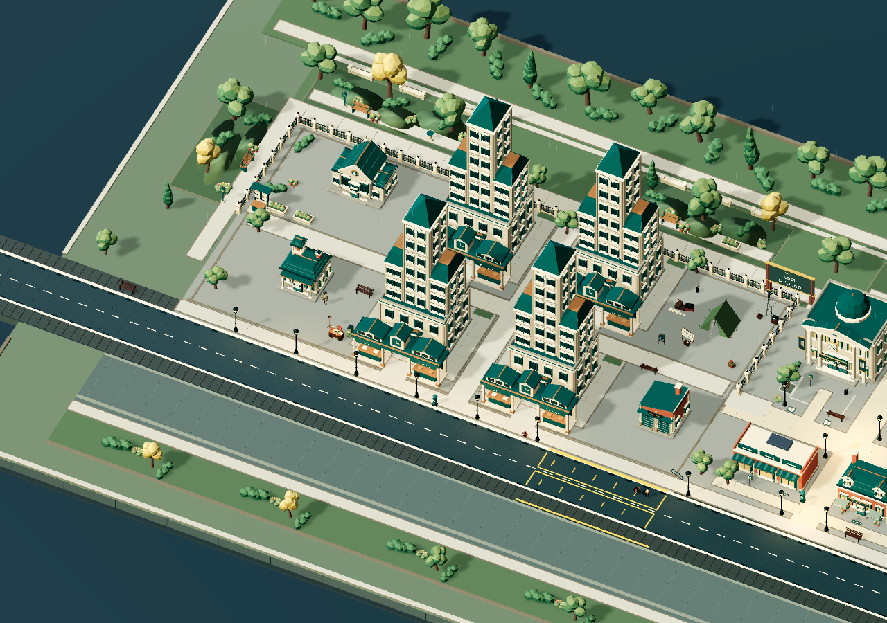

RADEMI LABS PRESENTS
THENIGHTDESK.
A small bureau. A city of cases.
Build a detective bureau.
Find the stories hiding in plain sight.
IN DEVELOPMENT FOR iOS
See the bureau in motion
A city with
work to do.
Take a short look around the neighborhood, then move closer to the investigators on the street.
This silent development capture moves from a city overview to a close view of investigators walking between offices and gathering around a desk. Recorded from a desktop development build; the final game may change.
Welcome to the night shift
Every city has its stories.
This one needs a detective.
A missing item. A suspicious receipt. A paper trail that doesn’t quite add up. Start with a little office, bring in your investigators, and give the city somewhere to take its mysteries.
From one desk to a district
Little by little.
Case by case.
Build something bigger.
Upgrade your offices and courier routes. Watch public halls, archive wings, and clock lanterns become part of your neighborhood.
Put your team on the case.
Recruit investigators, make room for the next shift, and follow your team as they get to work.
Get lost in the little details.
Zoom in, find a different angle, or pull back to see your whole operation. Explore in portrait or landscape.
The casebook / Fraud & Forgery
The details
tell a different story.
Beyond Lost & Found, follow a trail of duplicate receipts, hidden compartments, and suspicious seals. Every chapter brings another reason to look closer.
SELECT A FILE TO EXAMINE THE EVIDENCE
Scenes from the city
Look a little closer.
Small scenes. Curious details.
Artwork from the game in development.
DEVELOPMENT IMAGES · FINAL GAME MAY CHANGE
Your city. Your pace.
There’s always
one more clue.
The Night Desk is in development for iOS.
The next shift is still taking shape.
Before your first shift
A few details.
When can I play?
The Night Desk is in development for iOS. There is no public App Store download yet. We’ll share release details here when they’re ready.
Are these images from the game?
Yes. These are captures of the game’s current development artwork and scenes. The final release may change.
How do ads work?
Rewarded ads are optional. Eligible rewards can boost earnings, add an away or tip-off payout, or bring in applicants when there’s room. There are no forced interstitial ads, and Operations are ad-free. Rewards depend on eligibility and ad availability.
Where can I ask a question?
Visit our support page for contact details and useful information to include with a report.